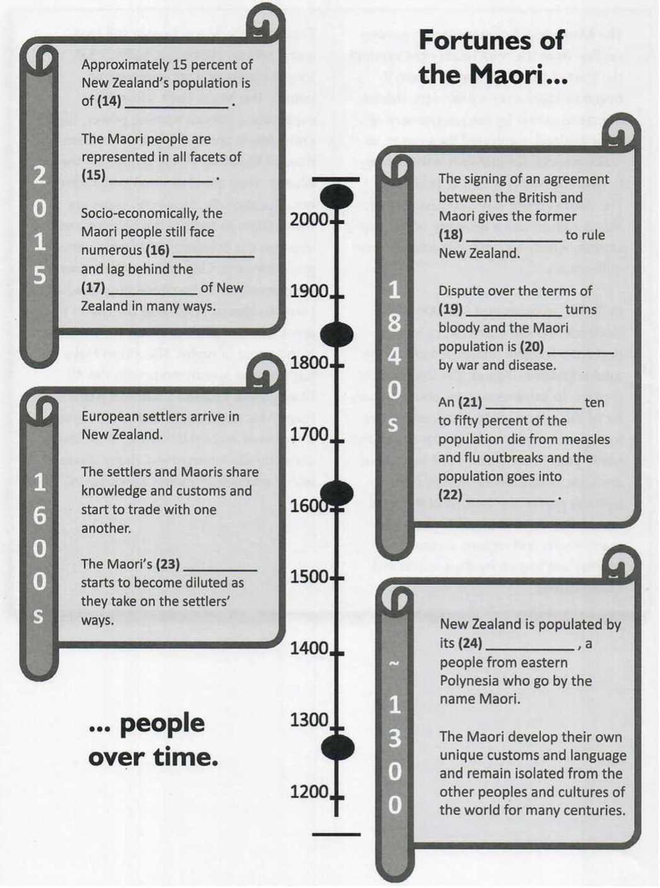
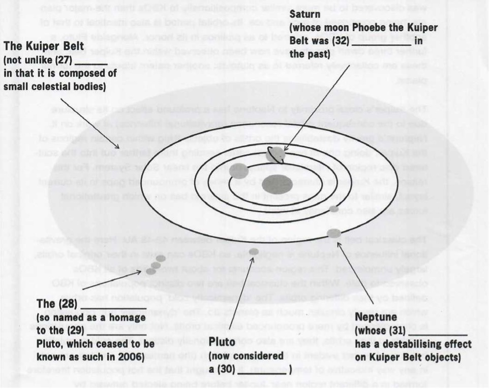
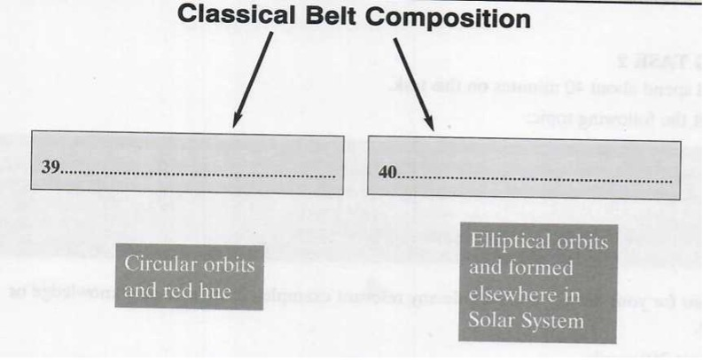

You should spend about 20 minutes on Questions 1-13, which are based on Reading Passage 1 below.
It is psychiatrist Ralph Klein who was credited with first coining the
phrase ‘secret schizoid’. Unlike the overtly schizoid or schizotypal
individual who is characterised by aloofness, coldness and indifference, the
secret schizoid may present himself as an engaging and interactive
individual according to Klein. Thus, Klein argues, there are not one but two
distinct schizoid personality types: the overt schizoid and the covert
schizoid.
Covert schizoids are difficult, on first glance, to identify.
They have erected a convincing defensive barrier of social assuredness,
engaging with the external reality, superficially at least. This engagement
might, to the casual onlooker, appear quite normal. However, if quizzed
about their behaviour, covert schizoids will probably reveal that they are
still, on a deeper level, withdrawn from the real world. Their outward
persona should be viewed, therefore, as little more than an act; the actual
personality only being revealed in a safe place within the confines of the
schizoids’ own mind; in other words, only ever known to the schizoids
themselves.
The covert schizoid, as Fairbairn identified as long
ago as 1940, is capable of ‘schizoid exhibitionism’; covert schizoids can
appear to express a lot of feeling and make impressive social contacts
without revealing anything of great significance about themselves. In
effect, they disown the ‘character’ they play in public - the very credible
front they put up -preserving their real personality intact. What the
schizoids fear most is the consequences of emotional intimacy, so by
erecting an invisible barrier between their public persona and their real
self, the schizoids can avoid ever having to confront this fear and yet lead
a relatively active and inclusive lifestyle.
Is the secret
schizoid schizophrenic? Certainly not. Though the two fall within the realms
of the same family of illnesses, the schizophrenic personality disorder is
far more destructive. Whereas schizoids can, depending on the severity of
their affliction, function fairly normally and even form relationships with
others (based on intellectual, physical, familial, occupational or
recreational, but most certainly not emotional, activities), and have a
relatively fair grasp of reality, schizophrenics are plagued by
hallucinations, delusions and disorganised thinking, all of which are likely
to affect their functional capacity in a very negative way. It is true,
however, that a family background of schizophrenia leaves one more
vulnerable to or likely to develop a schizoid or schizotypal personality.
The causes of schizoid personality disorder are not clear, but
it is theorised that an absence of parental affection and attention during
early childhood may encourage the defensive tendencies and fear of intimacy
that schizoids exhibit. It is also hypothesised that so-called secret
schizoids are highly intelligent and have learned to develop their act as an
effective coping mechanism which allows them to have the superficial
relationships they so often crave without compromising that which they hold
most valuable - their privacy.
One of the most damaging aspects
of life as a secret schizoid can be what is termed 'depersonalisation’,
namely, the loss of one’s sense of identity and individuality. Without the
feedback which may be gleaned from real interpersonal relationships,
schizoids’ perception of self may become skewed, or worse, they may begin to
lose all self-perception. Effectively, this leaves the individuals feeling a
deep sense of emptiness. Their emotional needs continue to go unfulfilled
despite the fact that, on the face of it, the secret schizoids are leading
an active and engaging lifestyle. The schizoids begin to question who or
what they are and, tragically, yearn for the emotional attachment needed to
confirm or reaffirm their perceptions of self an emotional attachment that
they are incapable of seeking.
The public perception of the
schizoid is misinformed at best. Just because they suffer from the illness
does not mean secret schizoids are apathetic, dispassionate or indifferent.
In actual fact, the schizoids can experience very strong emotions, but do so
in both the comfort and discomfort of their own mind; the comfort of not
feeling emotionally violated and the discomfort of not being able to share
one’s inner fears with another person in order to alleviate them. Schizoids
are often extremely sensitive people and their defensive front exists for
the sole purpose of protecting themselves from criticism with which they are
incapable of coping.
Complete the sentences below.
Choose NO MORE THAN THREE WORDS from the passage for each answer.
|
Whereas a typical schizoid might behave in an aloof or indifferent
manner, the secret schizoid tends to appear, superficially at least, a
very
person, and one who is capable of interacting very successfully with
those around him. The secret schizoid appears socially assured, but this is only a very good put up to make it seem as if he is in tune with what is going on in the real world, whilst at the same time protecting him from it. The way the secret schizoid behaves in public is only ; the outside world never gets a glimpse of his real self, which remains hidden. As they are unwilling to try to overcome their innate fear of emotional intimacy, schizoids who wish to lead a full and inclusive life must develop a separate , and create an invisible barrier between this and their private self. Schizoids differ from schizophrenics in that they have a fairly decent understanding of and are not inclined to suffer from the same incapacitating symptoms, like hallucinations, delusions and disorganised thinking, that schizophrenics do. A history of schizophrenia in the family leaves a person more to developing schizoid tendencies. Although it is not known what causes schizoid personality disorder, some suggest a lack of during the first few years of life is partly to blame. |
Do the following statements agree with the information given in Reading Passage 1?
Write
8. People with schizoid personality disorder seem to be much more
‘normal’ than they actually are.
9. Often, emotional attachment to another person is exactly what
schizoids need to help them form a better picture of who they are;
unfortunately, they are not capable of developing this.
10. The way schizoids are popularly perceived is fairly accurate.
11. Most secret schizoids tend to be cold and unemotional people
behind their public persona.
12. Schizoids often put up a front as they are very sensitive and
easily hurt.
13. Schizoids in general have a higher than average level of
intelligence.
You should spend about 20 minutes on Questions 14-26, which are based on Reading Passage 2 below.
The islands of New Zealand, or Aotearoa, as its first inhabitants named
them, first became populated at some point not long before 1300 AD. The
indigenous people of New Zealand, known by the name they gave themselves -
the Maori - are descendant from eastern Polynesia, whence they came in
several waves. They formed a tribal society based on Polynesian social
customs and organisation, but, over time, would develop a unique language
and culture all of their own, complete with a rich mythology, distinctive
crafts and performing arts, in splendid isolation from the rest of the
world.
Europeans did not arrive in New Zealand until the beginning of
the 17th century, and although their coming did not immediately bring the
great change one might have assumed (in fact, the islanders and the
Europeans lived fairly harmoniously together for some years, trading, and
sharing knowledge and customs), it would, ultimately, usher in enormous
upheaval. Over the years, the Maori began to adopt the settlers' ways, and
many aspects of indigenous culture were compromised as a result.
It was following the signing of the Treaty of Waitangi in 1840,
which gave Britain a mandate to govern New Zealand and bestowed the rights
of subjects of the British monarch on the Maori, that the rumblings of
discontent began in earnest.
At first, what was being disputed
was the exact terms of the treaty. The translation presented to the Maori in
their native tongue had a number of discrepancies in it compared to the
English version. Crucially, there was no mention of a total surrender of
power and control to the British monarch, so it is highly unlikely that the
Maori actually agreed with or consented to what they were signing when they
put pen to paper on the anglicised version.
This, and the fact
that only about one-third of the Maori tribes had actually signed off on the
treaty, led to the first dispute, which soon turned bloody. Inevitably, the
British forces, with their superior fire power, would prevail in the ensuing
conflict. The conflict itself, though, did not take a harsh toll on either
side in terms of fatalities. What really decimated the Maori population was
disease. The Maori were not biologically equipped for the diseases they
would contract as a result of contact with the settlers. They did not have
sufficient natural immunity to combat flu and measles, which, it is
estimated, together killed anywhere between ten and fifty percent of the
population. Other illnesses such as typhoid, scarlet fever and whooping
cough also took their toll.
The Maori population went into
serious decline from the mid-1800s right up until the start of the 20th
century when it began to stage a revival of sorts, thanks in part to efforts
by the government of New Zealand, motivated by a desire to make amends for
previous wrongdoing, to help the Maori return to prosperity. The 20th
century saw a renaissance of Maori culture and a recovery of the population,
which is continuing into the new millennium.
By 2015, an
estimated 660,000 New Zealanders could claim direct Maori descent - roughly
fifteen percent of the total population. Maori, the language, is spoken, to
some extent, by about a quarter of this group, or four percent of the total
population of New Zealand, and the Maori people are active in all aspects of
domestic affairs. Maori words have become part of the lexicon of the local
vernacular, New Zealand English, and many towns and regions across the
country are known by their traditional Maori names.
That said,
the Maori people still face some serious challenges today; challenges
chiefly of a socio-economic nature. The Maori have a lower life expectancy,
inferior earning power, higher crime levels and more health problems than
all the other ethnic groups on the islands. They are also serial
underachievers educationally. However, steps are being taken to redress the
balance and improve the prospects of Maori youths going forward. One area in
which they have excelled, and something which has come to almost symbolise
the Maori's great sense of pride and warrior tradition, is the game of
rugby. The Maori Haka has become synonymous with the All Blacks, New
Zealand's national rugby team. This traditional Maori dance is now showcased
around the world in performances by the international rugby players, which
precede all games they play in.
Complete the timeline diagram below.
Write NO MORE THAN THREE WORDS from the passage for each answer.
There are two correct answers.
Choose two letters from A, B, C, D and E.
The Maori people today
25. and 26.
You should spend about 20 minutes on Questions 27-40, which are based on Reading Passage 3 below.
Located in a region of the Solar System beyond the planets (from 30 AU at
Neptune’s orbit to circa 55 AU from the Sun), the Kuiper Belt, or
Edgeworth-Kuiper Belt I as many scientists prefer to call it, is similar to
an asteroid belt though far greater in size, being 20 times as wide and
potentially 200 times as massive. Like asteroid I belts, the Kuiper is
composed of small celestial bodies, the scattered remnants - the leftover
junk if you like - from the formation of the Solar System, but unlike
asteroid belts whose objects are largely composed of rock and metal, the
Kuiper’s objects consist of what are termed ‘frozen volatiles’: methane,
ammonia and water in ice form, for example. Another significant
differentiating factor between the Kuiper and asteroid belts is the presence
in the former of at least four dwarf planets, the most well-known of which
is Pluto, which, until 2006, was actually classed as a planet in its own
right. The belt has also previously been home to other large objects such as
Saturn’s moon Phoebe and Neptune’s Triton, which originated in the region
before coming under the influence of the gravitational forces of their
respective planets.
Though the existence of a phenomenon like
the belt had been hypothesised for some time, its existence wasn’t
officially confirmed until 1992, since when over one thousand Kuiper Belt
objects (KBOs) have been officially observed. On the basis of what we know
about the region, it is speculated that the actual number of KBOs measuring
over 100km in diameter is far in excess of the 1000 objects already
confirmed and closer to a figure in the region of 70,000. Initially, it was
speculated that the Kuiper region was responsible for the appearance of most
periodic comets (comets whose orbit lasts less than 200 years), but studies
conducted in the mid-90s appear to contradict this assumption and cast the
Kuiper region as one which is dynamically stable and, thus, not the
repository of periodic comets it was originally assumed to be. Instead, the
true source of periodic comets is now thought to be in the farther regions
of the Solar System outside of the Kuiper Belt in an area referred to as the
scattered disc, thought to have been created by the outward motion of
Neptune several billion years ago. Scattered-disc objects are KBO-like
bodies with orbits which take them as far as 100 AU from the Sun, far beyond
the 50 AU boundary of the Kuiper Belt itself.
Pluto Is the
largest-known Kuiper Belt object and also the tenth most massive body
observed directly orbiting the Sun. It was reclassified a dwarf planet after
it was discovered to be more similar compositionally to KBOs than the major
planets, being comprised of rock and Ice. Its orbital period is also
identical to that of another group of KBOs, referred to as plutinos in its
honor. Alongside Pluto, a further three dwarf planets have now been observed
within the Kuiper Belt, and these are collectively referred to as plutoids:
another patent tribute to the former planet.
The Kuiper’s close
proximity to Neptune has a profound effect on its structure due to the
consequent orbital resonance (gravitational influence) at work on it.
Neptune’s gravity destabilises the orbits of objects lying within certain
regions of the Kuiper, doing one of two things: either sending them farther
out into the scattered disc region of interstellar space, or into the linear
Solar System. For this reason, the Kuiper is characterised by a series of
pronounced gaps in its current layout, similar to the gaps present in the
asteroid belt on which gravitational forces are also constantly at work.
The classical belt is the region of the Kuiper between 42-48 AU.
Here the gravitational influence of Neptune is negligible, so KBOs can exist
in their original orbits, largely unaffected. This region accounts for about
two-thirds of all KBOs observed to date. Within the classical belt are two
distinct populations of KBO defined by their differing orbits. The
‘dynamically cold’ population has orbits which are nearly circular, much as
planets do. The ‘dynamically hot' population is characterised by more
pronounced elliptical orbits. Not only are the populations at odds in their
orbits, they are also compositionally distinct. The cold population has a
red hue not evident in the hot population (the names cold and hot are not in
any way indicative of temperature). It is thought that the hot population
therefore formed in a different region near Jupiter before being ejected
outward by movements among the gas giants, whereas the cold formed roughly
where it is still situated, just outside of the orbital range of Neptune.
Complete the diagram below.
Write NO MORE THAN THREE WORDS from the passage for each answer.
Complete the notes below.
Write NO MORE THAN THREE WORDS from the passage for each answer.
| IMPORTANT FACTS ABOUT THE KUIPER BELT | |
|---|---|
| - Located in part of the Solar System which is beyond the planets | |
| - Wider and much more than asteroid belts | |
| - Comprised of small celestial bodies | |
| - KBOs dissimilar to asteroids compositionally - composed of frozen volatiles rather than | |
| - Contains four known dwarf planets. Existence of dwarf planets is another distinguishing feature between it and | |
| - Though to exist for many years, presence of belt only confirmed in 1992 | |
| - Now an estimated 70,000 KBOs in existence | |
| - Contrary to initial theories, not responsible for the majority of which are now believed to come from further out in the Solar System | |
| - Pluto is the largest KBO and tenth most massive object in orbit around the Sun. | |
| - A further three dwarf planets have been identified. | |
| - Neptune’s influence has affected the of the Kuiper Belt, producing a series of pronounced gaps therein. | |
Complete the chart below.
Write NO MORE THAN THREE WORDS from the passage for each answer.
